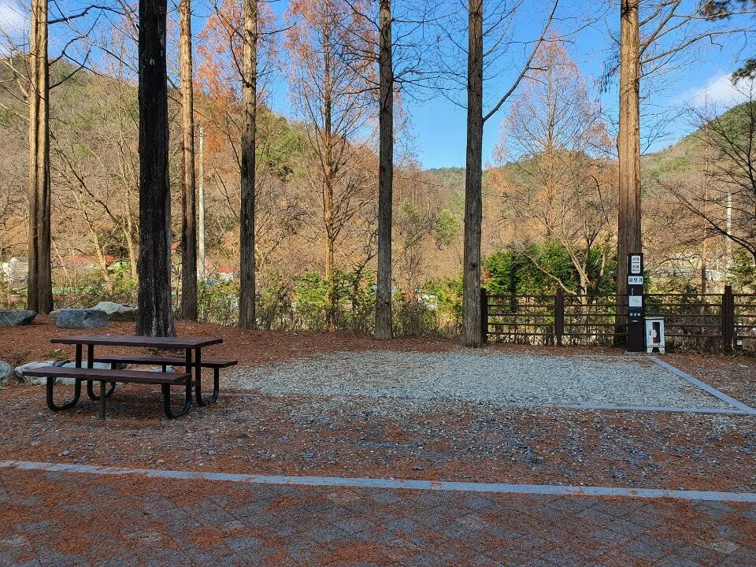
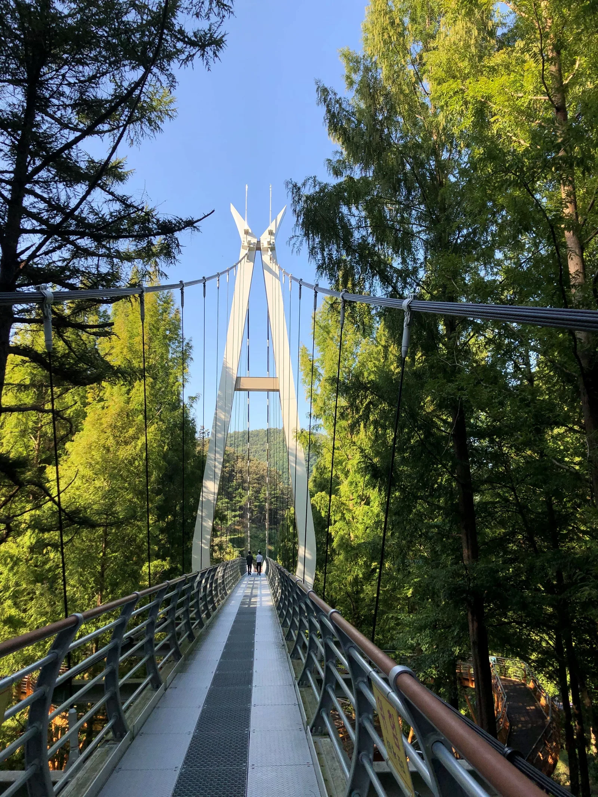
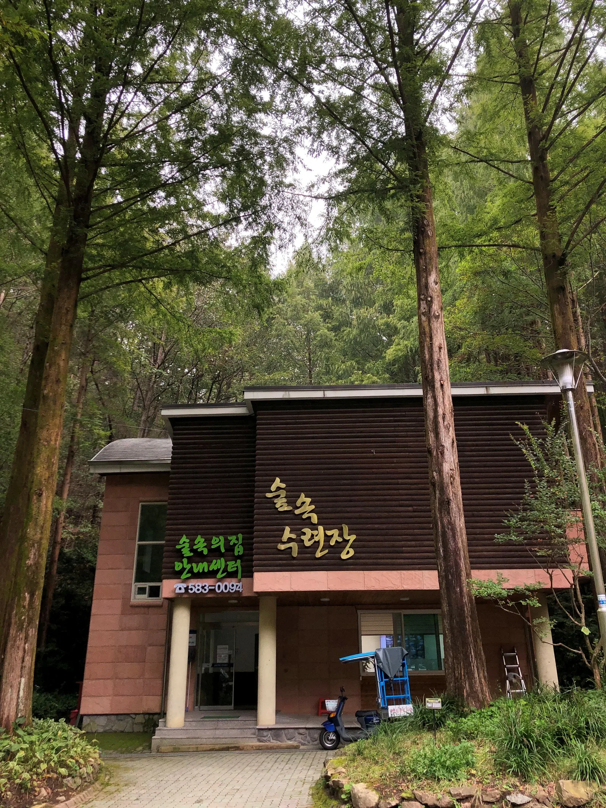
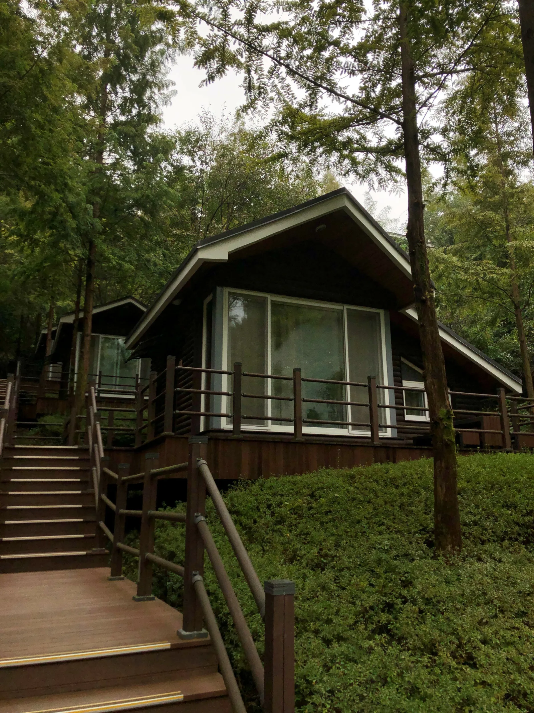
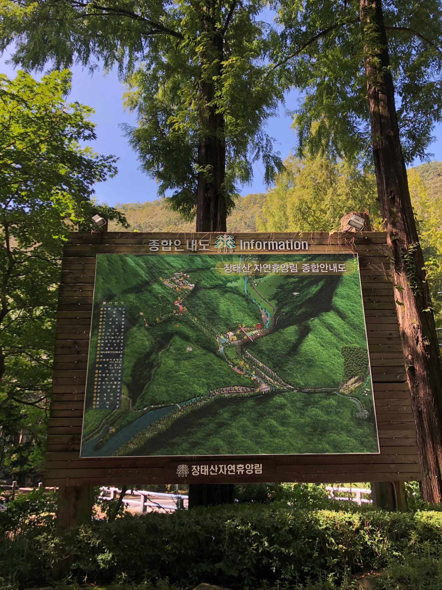
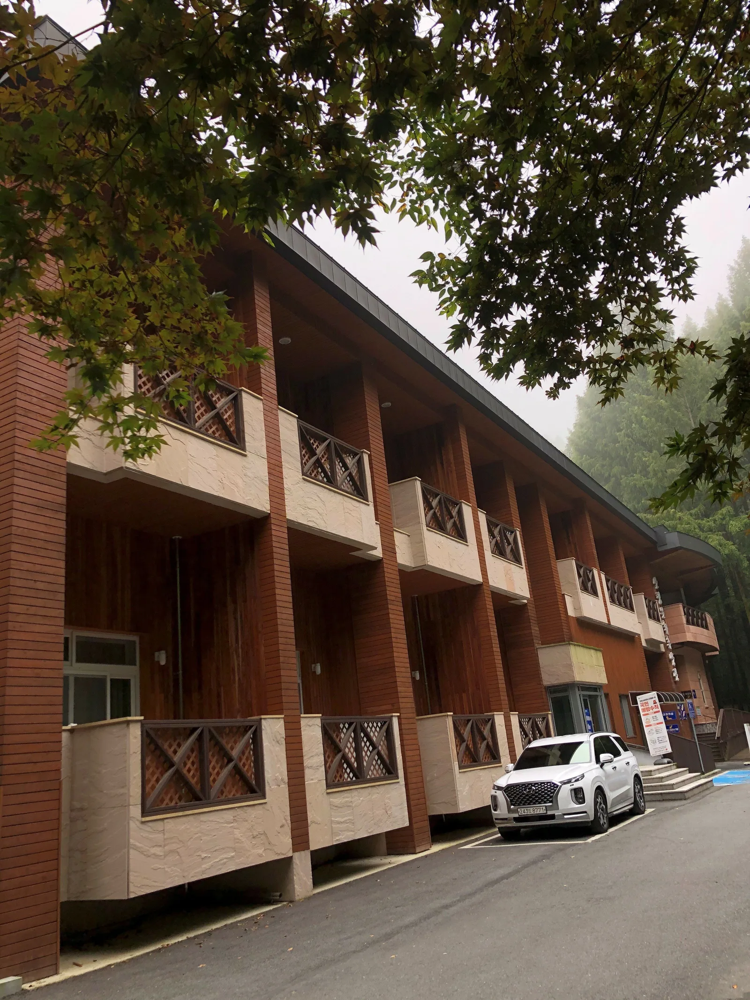
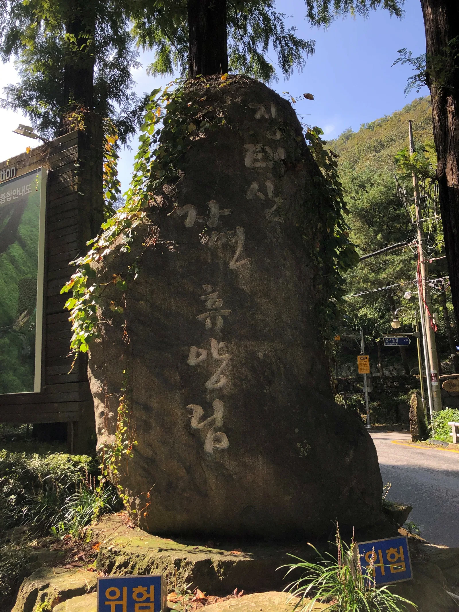

▲ 장태산자연휴양림의 상징인 스카이타워. 높이 27m로 메타세쿼이아 숲을 위에서 내려다보는 조망대다
대전 서구 장안동, 승용차로 도심에서 30분이면 닿는 자리에 25만 평 규모의 인공 조림 메타세쿼이아 숲이 있다. 고 임창봉 선생이 1970년대부터 사재를 들여 가꾼 숲으로, 6300여 그루의 메타세쿼이아가 빼곡히 들어차 있어 국내 최대급 인공 메타세쿼이아 숲으로 꼽힌다. 문제는 이 숲을 상징하는 27m 높이 스카이타워가 지금은 출입이 막혀 있다는 점이다. 2025년 11월 28일부터 정밀 안전점검을 이유로 스카이워크·스카이타워를 포함한 숲속어드벤처 시설이 임시 폐쇄됐고, 이 글을 쓰는 시점까지 재개 일정이 공지되지 않았다. 방문 전 반드시 확인해야 할 정보들을 순서대로 짚었다.
1. 국내 최대급 메타세쿼이아 숲 — 임창봉 선생이 일군 25만 평

▲ 메타세쿼이아 숲 아래 마련된 산책로와 쉼터. 가을이면 붉게 물든 나무가 숲 전체를 감싼다 ⓒ 숲나들e(foresttrip.go.kr)
장태산자연휴양림의 메타세쿼이아 숲은 자연 발생림이 아니라 사람이 심어 가꾼 인공림이라는 점에서 특별하다. 고 임창봉 선생이 황무지였던 이 산자락에 사재를 들여 나무를 심기 시작한 것이 지금의 숲이 됐고, 1991년 개장 이후 국내 최대급 규모의 메타세쿼이아 인공림으로 자리 잡았다. 곧게 뻗은 나무 기둥 사이로 하늘이 뚫린 듯한 산책로는 여름엔 짙은 녹음을, 가을엔 붉은 단풍을 내어주며 사계절 내내 방문객을 끌어모은다. 숲 전체는 등산로와 산책로가 촘촘히 연결돼 있어, 짧게는 30분 산책부터 길게는 2시간 안팎의 순환 코스까지 체력에 맞춰 고를 수 있다.
2. 스카이타워·스카이워크 — 지금은 오를 수 없다

▲ 나무 사이를 가로지르는 스카이워크 구간. 스카이타워와 함께 숲을 위에서 내려다보는 대표 시설이다 ⓒ 숲나들e(foresttrip.go.kr)
장태산자연휴양림의 대표 명소는 높이 27m의 스카이타워다. 나무 꼭대기 높이까지 나선형으로 오르는 전망대로, 정상에 서면 메타세쿼이아 숲 전체가 초록 카펫처럼 펼쳐지는 조망을 볼 수 있어 오랫동안 장태산의 얼굴 역할을 해왔다. 스카이타워와 이어지는 스카이워크(숲속어드벤처)까지 포함하면 전체 동선이 196m에 달한다.
다만 2025년 11월 28일부터 정밀 안전점검을 이유로 스카이워크·스카이타워가 임시 폐쇄됐다. 이 기사를 쓰는 2026년 9월 현재까지도 재개 일정은 별도로 공지되지 않은 상태이므로, 스카이타워 탐방을 목적으로 방문을 계획한다면 출발 전 반드시 관리사무소(042-583-0094) 또는 숲나들e 공지사항으로 재개 여부를 확인해야 한다. 다행히 숲 초입의 출렁다리(약 140m)와 그 밖의 등산로·산책로는 이번 폐쇄와 무관하게 정상 운영되므로, 스카이타워를 제외하더라도 숲 산책 자체는 평소와 다름없이 즐길 수 있다.
✅ 스카이타워 방문 전 체크리스트
· 스카이워크·스카이타워: 2025년 11월 28일부터 정밀 안전점검으로 임시 폐쇄, 재개 일정 미정
· 출렁다리(약 140m)와 등산로·산책로는 정상 운영
· 방문 전 관리사무소(042-583-0094)로 재개 여부 확인 권장
3. 숙박시설 — 휴양관·숲속의집·숲속수련장

▲ 산림문화휴양관 건물 외관. 숲속의집·숲속수련장과 함께 숲 안에서 하룻밤 묵을 수 있는 숙박시설이다 ⓒ 숲나들e(foresttrip.go.kr)

▲ 숲속의집 통나무 객실. 나무 사이 경사지에 자리해 창밖으로 바로 숲이 보인다 ⓒ 숲나들e(foresttrip.go.kr)
당일 산책으로 아쉽다면 숲 안에서 하룻밤을 묵을 수도 있다. 장태산자연휴양림은 산림문화휴양관, 숲속의집(10동), 숲속수련장 세 종류의 숙박시설을 운영한다. 예약은 산림청 통합 예약 시스템인 숲나들e를 통해 매월 1일 오전 9시에 다음 달 예약분이 열리는 선착순 방식으로 진행되며, 주중·비수기 요금이 주말·성수기보다 저렴하게 책정된다. 숲속의집은 계단식으로 조성된 데크 위에 지어져 있어 객실 창밖으로 메타세쿼이아 숲이 바로 내다보이는 것이 특징이다.
숲나들e에서 숙박시설 예약 확인 가능4. 입장료·주차·이용시간
장태산자연휴양림은 입장료와 주차료 모두 무료다. 시민 휴식 편의를 위해 전면 무료 개방을 유지하고 있으며, 제1주차장부터 제4주차장까지 총 472대를 수용할 수 있는 주차 공간이 마련돼 있다. 주요 시설은 연중무휴로 운영되지만, 11~2월에는 오전 9시부터 오후 5시까지로 운영시간이 다른 계절보다 짧아진다는 점을 참고해야 한다.
| 항목 | 내용 |
|---|---|
| 입장료·주차료 | 무료 |
| 주차 규모 | 제1~4주차장, 총 472대 |
| 운영시간 | 연중무휴, 11~2월은 09:00~17:00 |
| 스카이워크·스카이타워 | 2025년 11월 28일부터 임시 폐쇄(정밀 안전점검) |
| 위치 | 대전 서구 장안로 461 |
| 문의 | 042-583-0094 |
5. 산림욕 코스 — 출렁다리·계곡 따라 걷는 순환로

▲ 휴양림 입구의 탐방코스 안내판. 숲속의집·수변데크·전망대 위치가 함께 표시돼 있다 ⓒ 숲나들e(foresttrip.go.kr)
장태산자연휴양림은 메타세쿼이아 숲을 중심으로 여러 갈래의 산책로·등산로가 순환 형태로 연결돼 있다. 초입의 출렁다리를 건너 숲 중심부로 들어선 뒤, 계곡을 따라 난 데크길을 걷다가 숙박시설 구역을 지나 다시 입구로 돌아오는 코스가 가장 무난하다. 스카이타워가 폐쇄된 지금은 이 산림욕 코스 자체가 장태산 방문의 핵심이 되는 셈이다. 나무 그늘이 짙어 한여름에도 비교적 선선하게 걸을 수 있고, 곳곳에 벤치와 쉼터가 있어 가족 단위 방문객이나 어르신도 무리 없이 완주할 수 있는 난이도다.

▲ 숙박동이 늘어선 구역. 산림욕 순환 코스가 숙박시설 인근을 지나도록 조성돼 있다 ⓒ 숲나들e(foresttrip.go.kr)

▲ 휴양림 입구의 표지석. 이 지점을 지나면 곧바로 메타세쿼이아 숲길이 시작된다 ⓒ 숲나들e(foresttrip.go.kr)
✅ 대전 장태산자연휴양림, 가기 전 체크리스트
· 25만 평 부지에 메타세쿼이아 6300여 그루, 국내 최대급 인공 조림 숲
· 스카이타워(27m)·스카이워크는 2025년 11월 28일부터 정밀 안전점검으로 임시 폐쇄 — 재개 일정 미정, 방문 전 042-583-0094로 확인
· 초입 출렁다리(약 140m)와 산책로·등산로는 정상 운영
· 입장료·주차료 모두 무료, 주차 472대(제1~4주차장)
· 운영시간은 연중무휴이나 11~2월은 09:00~17:00로 단축
· 숙박은 산림문화휴양관·숲속의집·숲속수련장, 숲나들e에서 매월 1일 다음 달분 선착순 예약